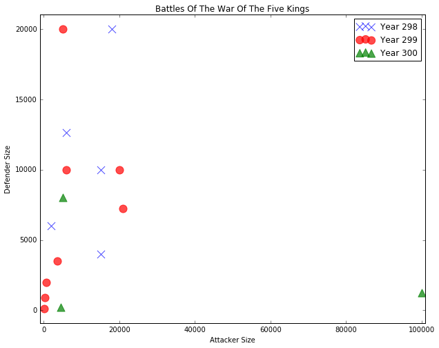

Learning machine learning? Try my machine learning flashcards or Machine Learning with Python Cookbook.
Scatterplot In MatPlotLib
Preliminaries
%matplotlib inline
import pandas as pd
import matplotlib.pyplot as plt
import numpy as np
# Set ipython's max row display
pd.set_option('display.max_row', 1000)
# Set iPython's max column width to 50
pd.set_option('display.max_columns', 50)Create dataframe
df = pd.read_csv('https://raw.githubusercontent.com/chrisalbon/war_of_the_five_kings_dataset/master/5kings_battles_v1.csv')
df.head()| name | year | battle_number | attacker_king | defender_king | attacker_1 | attacker_2 | attacker_3 | attacker_4 | defender_1 | defender_2 | defender_3 | defender_4 | attacker_outcome | battle_type | major_death | major_capture | attacker_size | defender_size | attacker_commander | defender_commander | summer | location | region | note | |
|---|---|---|---|---|---|---|---|---|---|---|---|---|---|---|---|---|---|---|---|---|---|---|---|---|---|
| 0 | Battle of the Golden Tooth | 298 | 1 | Joffrey/Tommen Baratheon | Robb Stark | Lannister | NaN | NaN | NaN | Tully | NaN | NaN | NaN | win | pitched battle | 1.0 | 0.0 | 15000.0 | 4000.0 | Jaime Lannister | Clement Piper, Vance | 1.0 | Golden Tooth | The Westerlands | NaN |
| 1 | Battle at the Mummer's Ford | 298 | 2 | Joffrey/Tommen Baratheon | Robb Stark | Lannister | NaN | NaN | NaN | Baratheon | NaN | NaN | NaN | win | ambush | 1.0 | 0.0 | NaN | 120.0 | Gregor Clegane | Beric Dondarrion | 1.0 | Mummer's Ford | The Riverlands | NaN |
| 2 | Battle of Riverrun | 298 | 3 | Joffrey/Tommen Baratheon | Robb Stark | Lannister | NaN | NaN | NaN | Tully | NaN | NaN | NaN | win | pitched battle | 0.0 | 1.0 | 15000.0 | 10000.0 | Jaime Lannister, Andros Brax | Edmure Tully, Tytos Blackwood | 1.0 | Riverrun | The Riverlands | NaN |
| 3 | Battle of the Green Fork | 298 | 4 | Robb Stark | Joffrey/Tommen Baratheon | Stark | NaN | NaN | NaN | Lannister | NaN | NaN | NaN | loss | pitched battle | 1.0 | 1.0 | 18000.0 | 20000.0 | Roose Bolton, Wylis Manderly, Medger Cerwyn, H... | Tywin Lannister, Gregor Clegane, Kevan Lannist... | 1.0 | Green Fork | The Riverlands | NaN |
| 4 | Battle of the Whispering Wood | 298 | 5 | Robb Stark | Joffrey/Tommen Baratheon | Stark | Tully | NaN | NaN | Lannister | NaN | NaN | NaN | win | ambush | 1.0 | 1.0 | 1875.0 | 6000.0 | Robb Stark, Brynden Tully | Jaime Lannister | 1.0 | Whispering Wood | The Riverlands | NaN |
Make plot
# Create a figure
plt.figure(figsize=(10,8))
# Create a scatterplot of,
# attacker size in year 298 as the x axis
plt.scatter(df['attacker_size'][df['year'] == 298],
# defender size in year 298 as the y axis
df['defender_size'][df['year'] == 298],
# the marker as
marker='x',
# the color
color='b',
# the alpha
alpha=0.7,
# with size
s = 124,
# labelled this
label='Year 298')
# attacker size in year 299 as the x axis
plt.scatter(df['attacker_size'][df['year'] == 299],
# defender size in year 299 as the y axis
df['defender_size'][df['year'] == 299],
# the marker as
marker='o',
# the color
color='r',
# the alpha
alpha=0.7,
# with size
s = 124,
# labelled this
label='Year 299')
# attacker size in year 300 as the x axis
plt.scatter(df['attacker_size'][df['year'] == 300],
# defender size in year 300 as the y axis
df['defender_size'][df['year'] == 300],
# the marker as
marker='^',
# the color
color='g',
# the alpha
alpha=0.7,
# with size
s = 124,
# labelled this
label='Year 300')
# Chart title
plt.title('Battles Of The War Of The Five Kings')
# y label
plt.ylabel('Defender Size')
# x label
plt.xlabel('Attacker Size')
# and a legend
plt.legend(loc='upper right')
# set the figure boundaries
plt.xlim([min(df['attacker_size'])-1000, max(df['attacker_size'])+1000])
plt.ylim([min(df['defender_size'])-1000, max(df['defender_size'])+1000])
plt.show()